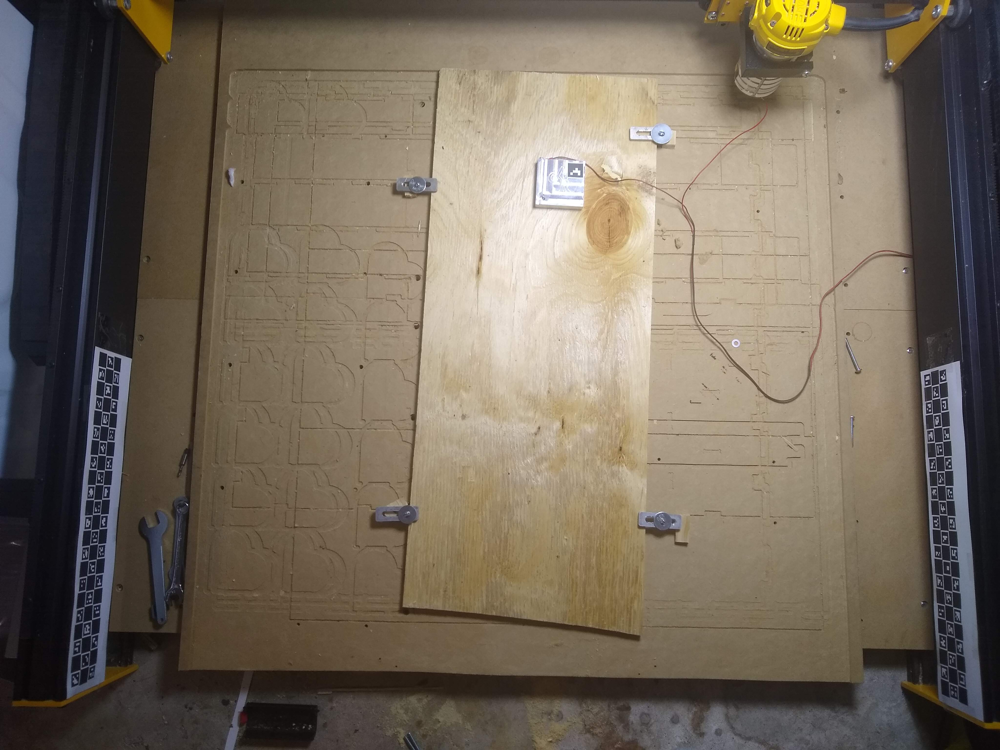

Left rail markers not detected.The bed → image homography can't be solved without both rails. Check the left ChArUco strip is fully in frame, unoccluded, and well lit — then detect again.
Raw camera · angled view (need not be overhead)
4096 × 3072 · only 1 of 2 rails detected

no overhead view yet
Overhead warp unavailable
Both rail homographies are required to project onto the bed plane. Resolve the left-rail detection above, then the overhead view and inch-accurate mapping become available.